Talet
[Sida 1]
Askersund 8 maj 1910
Demonstranter!
Inledning.
Efter det svåraste år, som Sveriges klassmedvetna arbetare utstått – lockout- och storstrejksåret – har de åter haft sin internationella mönstringsdag för att kräva sina förhållna mänskliga rättigheter 1 maj. Här i Askersund blev man inte färdig i tid, utan vi kommer på sladden, men – bättre sent än aldrig!
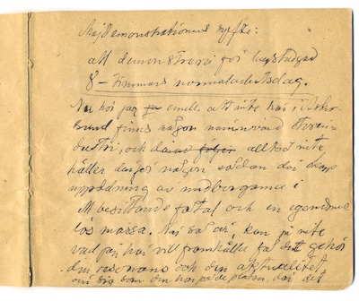[Sida 3]
Majdemonstrationens syfte:
att demonstrera för lagstadgad
8-timmars normalarbetsdag.
Nu hör jag emellertid att inte här i Askersund finns någon nämnvärd storindustri, och alltså inte
heller därför någon sådan där skarp
uppdelning av medborgarna i
ett besittande fåtal och en egendomslös massa. När så är, kan ju inte
vad jag här vill framhålla få det gehör,
den resonans och den aktualitet
över sig som det har på de platser, där de
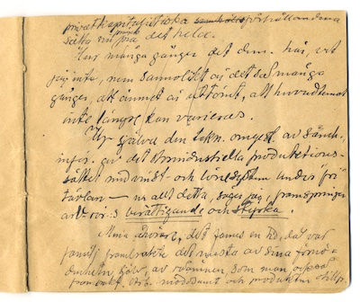
[Sida 5]
privatkapitalistiska förhållandena
sätter sin prägel på det hela.
Hur många gånger det demonstrerats här, vet jag inte, men sannolikt är det så många gånger, att ämnet är uttömt, att huvudtemat inte längre kan varieras.
Ur själva den tekniska omgestaltningen av samhället, införandet av det storindustriella produktionssättet med vinst- och lönesystem under "fri" tävlan – ur allt detta, säger jag, framspringer arbetarrörelsens berättigande och styrka.
Mina åhörare, det fanns en tid, då var
familj frambragte det mesta av sina förnödenheter själv, av råämnen, som man också
frambragt. Arbetet var mödosamt och produkten otillfredsställande
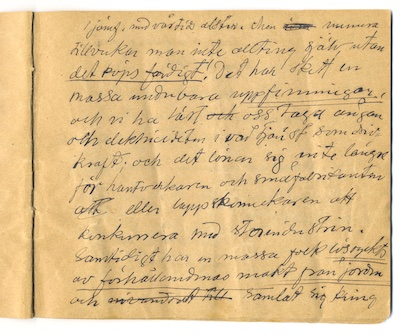
[Sida 7]
i jämförelse med vår tids alster. Men numera
tillverkar man inte allting själv, utan
det köps färdigt! Det har skett en
massa underbara uppfinningar,
och vi har lärt oss ta ångan
och elektriciteten i vår tjänst som drivkraft; och det lönar sig inte längre
för hantverkaren och småfabrikanten
eller lappskomakaren att
konkurrera med storindustrin.
Samtidigt har en massa folk lösryckts
av förhållandenas makt från jorden
och samlat sig kring
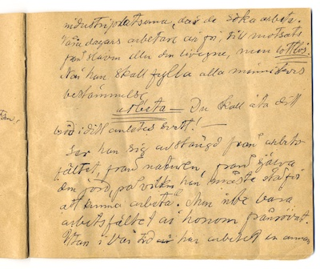
[Sida 9]
industriplatserna, där de söker att arbeta.
Våra dagars arbetare är fri, till motsats
från slaven eller den livegne, men lottlös.
När han skall fylla alla människors
bestämmelse,
arbeta – Du skall äta ditt
bröd i ditt anletes svett!1 Mosebok 3:19 —
ser han sig avstängd från arbetsfältet, från naturen, från själva
den jord, på vilken han måste stå för
att kunna arbeta. Men inte bara
arbetsfältet är honom frånrövat.
Utan i vår tid har arbetet en annan
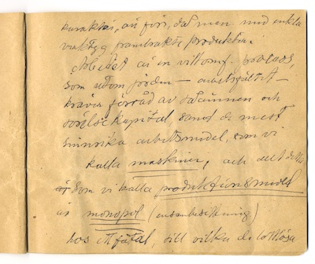
[Sida 11]
karaktär än förr, då man med enkla
verktyg frambragte produkten.
Arbetet är en vittomfattande process,
som utom jorden — arbetsfältet —
kräver förråd av råämnen och
rörelsekapital, samt de mest
sinnrika arbetsmedel, som vi
kallar maskiner, och allt detta
som vi kallar produktionsmedel
är monopol (ensambesittning)
hos ett fåtal, till vilka de lottlösa
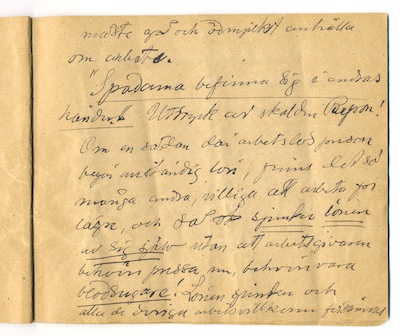
[Sida 13]
måste gå och ödmjukt anhålla
om arbete.
"Spadarna befinner sig i andras
händer." Uttryck av skalden Byron!Lord Byrons jungfrutal i överhuset. Se även "200 år sen ludditerna avrättades" av Lars Henriksson i Arbetet.
Om en sådan där arbetslös person
begär anständig lön, finns det så
många andra, villiga att arbeta för
lägre, och så sjunker lönen
av sig själv utan att arbetsgivaren
behöver pressa ner, behöver vara
blodsugare! Lönen sjunker och
alla de övriga arbetsvillkoren försämras
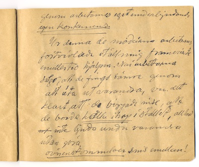
[Sida 15]
genom arbetarnas eget underbjudande,
egen konkurrens.
Ur denna de moderna arbetarnas förtvivlade ställning framväxte emellertid hjälpen. När arbetarna såg, att de fick det sämre genom att äta ut varandra, var det klart, att de började inse, att de borde hålla ihop i stället, alltså inte bjuda under varandra utan göra överenskommelser sinsemellan!
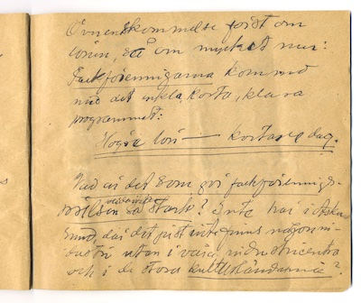[Sida 17]
Överenskommelse först om lönen, så om mycket mer: Fackföreningarna kom med det enkla, korta, klara programmet: Högre lön — kortare dag.
Vad är det som gör fackföreningsrörelsen solidariteten så stark? Inte här i Askersund, där det inte finns någon industri, utan i våra industricentra och i de stora kulturländerna?
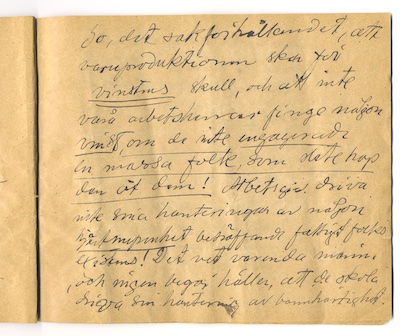[Sida 19]
Jo, det sakförhållandet, att varuproduktionen sker för vinstens skull, och att inte våra arbetsherrar hade fått någon vinst, om de inte engagerade en massa folk, som slite ihop den åt dem! Arbetsgivarna driver inte sina hanteringar av någon hjärtnupenhet beträffande fattigt folks existens! Det vet varenda människa , och ingen begär heller, att de ska driva sin hantering av barmhärtighet.
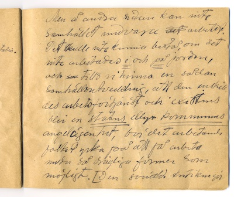[Sida 21]
Men å andra sidan kan inte
samhället undvara arbetet.
Det skulle inte kunna bestå, om det
inte arbetades i och på jorden,
och tills vi vinner en sådan
samhällsutveckling, att den enskildes arbetsförtjänst och existens
blir en statens eller kommunens
angelägenhet, bör det arbetande
folket yrka på att få arbeta
under så drägliga former som
möjligt. Den socialdemokratiska kritiken gör
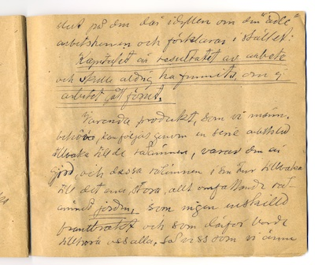
[Sida 23]
slut på den där idyllen om den "ädle"
arbetsherren och förklarar i stället:
Kapitalet är resultatet av arbete
och skulle aldrig ha funnits, om inte
arbetet gått förut.
Varenda produkt, som vi människor
behöver, kan följas genom en serie arbetsled
tillbaka till de råämnen, varav den är
gjord, och dessa råämnen i sin tur tillbaka
till det ena, stora, allt omfattande råämnet jorden, som ingen enskild
frambragt och som därför borde
tillhöra oss alla, så visst som vi ännu
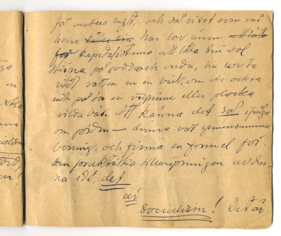
[Sida 25]
får andas luft, och så visst som vår
herre har lov ännu
för kapitalisterna att låta sin sol
skina på goda och onda, har lov att ta
lite vatten ur en bäck, om de också
inte får ta en vedpinne eller plocka
vilda bär. Att känna det så ifråga
om jorden – denna vår gemensamma
boning, och finna en formel för
den praktiska tillämpningen av denna idé, det
är
socialism! Det är
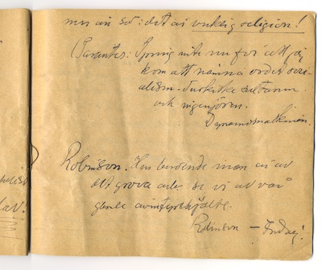
[Sida 27]
mer än så: det är verklig religion!
Parentes: Spring inte nu för att jag kom att nämna ordet socialism. Turkiske sultanen och ingenjören. Dynamomaskinen.
Robinson. Hur beroende man är av det grova arbetet ser vi av vår gamle äventyrshjälte. Robinson – Fredag!
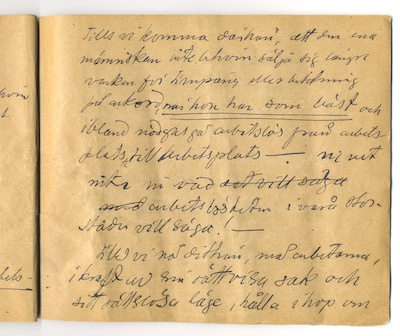[Sida 29]
Tills vi komma därhän, att den ena
människan inte behöver sälja sig längre
varken för timpeng eller betalning
på ackord, när hon har som bäst och
ibland nödgas gå arbetslös från arbetsplats till arbetsplats – ni vet
inte ni vad
arbetslösheten i våra stor
städer vill säga! —
tills vi nå dithän, må arbetarna,
i kraft av sin rättvisa sak och
sitt rättslösa läge, hålla ihop om
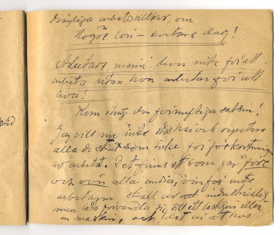
[Sida 31]
drägliga arbetsvillkor, om
högre lön – kortare dag!
Arbetare, människan lever inte för att
arbeta, utan hon arbetar för att
leva!
Kom ihåg den förnuftiga satsen!
Jag vill nu inte stå här och repetera
alla de skäl som tala för förkortning
av arbetstiden. Det finns ett som går före
och över alla andra, varför inte
arbetaren skall av industrialismen låta förvandla sig till ett lastdjur eller
en maskin, och det är att hos
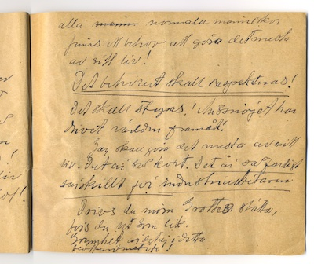
[Sida 33]
alla normala människor
finns ett behov att göra det mesta
av sitt liv!
Det behovet skall respekteras!
Det skall stegras! Missnöjet har
drivit världen framåt!
Jag skall göra det mesta av mitt liv. Det är så kort. Det är så farligt, särskilt för industriarbetaren.
Drivs du inom Grottes stätta,
bärs du ut som lik.
Grymhet är det ej i detta;
blott aritmetik!Ur "Den nya Grottesången" i Viktor Rydberg: Dikter. Andra samlingen (1891) Litteraturbanken. Ej ordagrant citerad. Originalet har andra skiljetecken, "Drevs" i stället för "Drivs"
och "vräks" i stället för "bärs".
[Sida 35]
Detta mitt korta, farliga liv är det enda jag med visshet vet något om. Må det alltså bjuda mig något. Må jag få min andel i kulturen. Gumman och tåget! Vad kommer.
Flygskepp!
En intelligent människa säger: Jag vill nog arbeta, men jag vill också ha lönen. Och lönen är inte bara en penninglön!
Kan inte nöja sig med lika lite som Pär Agust i StrixKaraktär i en berättelse av Alfred Engström, se Strix (1898):52 i Svenska tidningar hos KB:
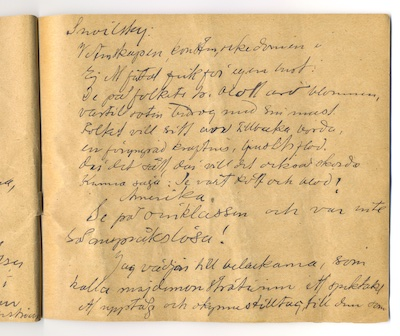[Sida 37]
Snoilsky:
Vetenskapen, konsten, rikedomen
Ej ett fåtal fick för egen lust.
De på folkets träd blott äro blommen,
vartill roten bidrog med sin must.
Folket vill sitt arv tillbaka börda,
en föryngrad ljusets, kraftens flod.
Där det sått, där vill det också skörda
Kunna säga: se vårt kött och blod!Ur "Emigrationen" i Carl Snoilsky: Dikter. Tredje samlingen (1883) Litteraturbanken. Ej ordagrant citerad. Originalet har andra skiljetecken, "Folket vill sitt lån tillbaka börda", "en förädlad ljusets, kraftens flod" och "se mitt kött och blod!"
Amerika. Se på överklassen och var inte så anspråkslösa!
Jag vädjar till belackarna, som
kallar majdemonstrationen ett spektakel,
ett upptåg och okynnestilltag, till dem som
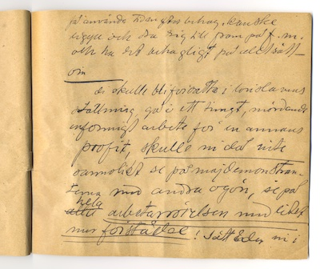
[Sida 39]
får använda tiden efter behag, kanske
ligga och dra sig till fram på förmiddagen
och ha det behagligt på alla sätt –
om
de skulle bli försatta i löneslavens
ställning, gå i ett tungt, mördande
enformigt arbete för en annans
profit, skulle ni då inte
sannolikt se på majdemonstranterna med andra ögon, se på
hela arbetarrörelsen med lite
mer förståelse! Sätt er in i
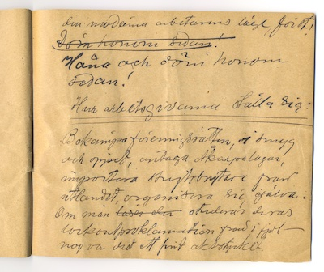
[Sida 41]
den moderna arbetarens läge, först!
Håna och döm honom
sedan!
Hur arbetsgivarna ställer sig:
Bekämpar föreningsrätten, i smyg
och öppet, antar Åkarpslagar,
importerar strejkbrytare från
utlandet, organiserar sig själva.
Om man studerar deras
lockoutproklamation från i fjol –
nog var det ett fint aktstycke:
[Sida 43]
Ensamma herrar på täppan ska de vara!
1) Utkasta 30 000 (textilarbetare)
2) 50 000 (järnbrukens arbetare)
3) Vilka de behagade kasta ut!
Är det nu fullt rättvist att bekläda
sig själv med en sådan maktfullkomlighet? Somliga människor
tycker att det är förmätet av arbetarna att strejka,
ehuru de ibland strejkar för
rätten till det
knappaste bröd; att arbetsköparna
kastar ut arbetare, vräker barnsängskvinnor
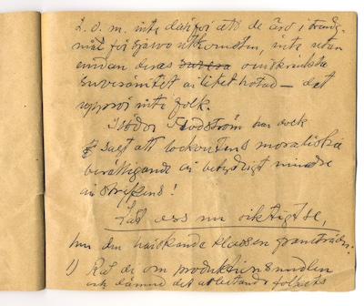
[Sida 45]
till och med, inte därför att de är i trångmål för själva utkomsten, inte utan
emedan deras oinskränkta
suveränitet är lite hotad – det
upprör inte folk.
Isidor Flodström har dock sagt att lockoutens moraliska berättigande är betydligt mindre än strejkens!
Låt oss nu riktigt se, hur den härskande klassen framträder:
1) De rår om produktionsmedlen
och därmed det arbetande folkets
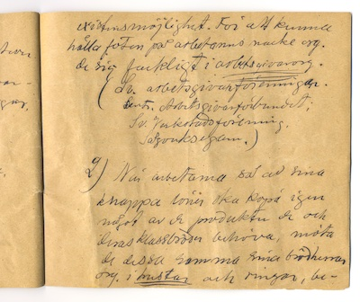
[Sida 47]
existensmöjlighet. För att kunna
hålla foten på arbetarnas nacke organiserar
de sig fackligt i arbetsgivarorganisationer.
(Svenska arbetsgivarföreningar.
Centrala Arbetsgivarförbundet;
Sveriges Verkstadsförening,
Sågverksägarna.)
2) När arbetarna så av sina
knappa löner ska köpa igen
något av de produkter de och
deras klassbröder behöver, möter
de dessa samma sina brödherrar
organiserade i trustar och ringar,
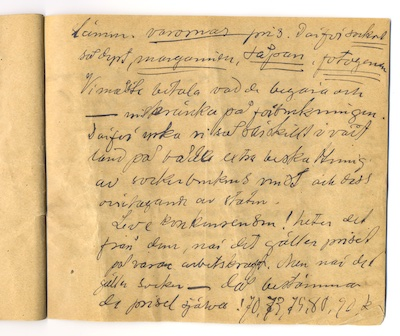
[Sida 49]
bestämmande varornas pris. Därför är sockret
så dyrt, margarinet, såpan, fotogenen.
Vi måste betala vad de begär och
– inskränka på förbrukningen.
Därför yrkar vi så särskilt i vårt
land på både extra beskattning
av sockerbrukens vinst och dess
övertagande av staten.
Leve konkurrensen! heter det från dem, när det gäller priset på varan arbetskraft. Men när det gäller socker – då bestämmer de priset själva! 70, 73, 79, 80, 90 kg.
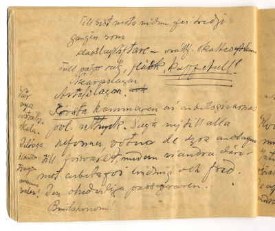[Sida 50]
Till sist möter vi dem för tredje gången som klasslagstiftare – orättfärdigt skattesystem
Tull på råg, fläsk, kaffetull! Åkarpslagar. Avtalslagar.
Första kammaren är arbetsgivarnas politiska uttryck. Säger nej till alla reformer, voterar de dyra anslagen till försvaret, medan vi andra däre mot arbetar för lindring och fred. Den ohederliga passageraren. Binda honom!
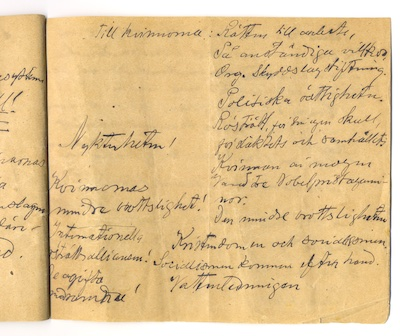[Sida 51]
Till kvinnorna: Rätten till arbete, På anständiga villkor, Organisering. Skyddslagstiftning. Politiska rättigheter. Rösträtt, för sin egen skull, för släktets och samhällets. Kvinnan är mogen våra tre Nobelpristagarinnor.
Den mindre brottsligheten. Kristendomen och socialismen. Socialismen kommer efter hand. Vattenledningen.
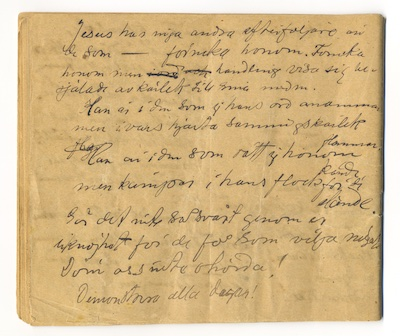[Sida 52]
Jesus har inga andra efterföljare än de som – förnekar honom. Förnekar honom men i handling visar sig besjälade av kärlek till sina medmänniskor.
Han är i den, som ej hans ord anammar,
men i vars hjärta sanningskärlek
flammar.
Han är i den, som rätt ej honom
kände,
men kämpar i hans flock för de
elände.Ur "Grubblaren" i Viktor Rydberg: Dikter. Andra samlingen (1891) Originalet har andra skiljetecken och "namn" i stället för "ord". Litteraturbanken.
Gör det inte så svårt genom er liknöjdhet för de få som vilja något
Döm oss inte ohörda!
Demonstrera alla dagar!
Anteckningar
[Sida 2]
Här i Askersund finns nu emellertid inte någon storindustri och därför inte heller någon sådan där skarp uppdelning i två klasser! Alltså inte den resonans som eljest!
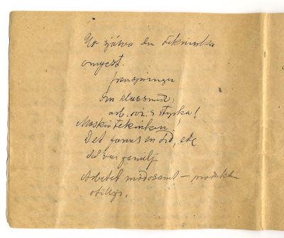[Sida 4]
Ur själva den tekniska omgestaltningen framspringer den klassmedvetna arbetarrörelsens styrka!
Maskintekniken!
Det fanns en tid, etc då var familj
Arbetet mödosamt – produkten otillfredsställande
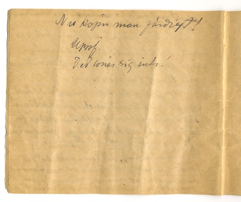[Sida 6]
Nu köper man färdigt!
Uppfinningar
Det lönar sig inte!
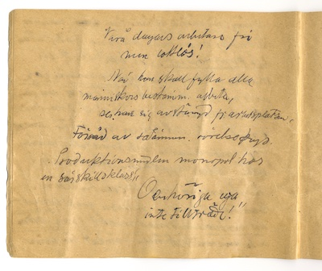[Sida 8]
Våra dagars arbetare fri men lottlös!
När han skall fylla alla människors bestämmelse, arbeta, ser han sig avstängd från arbetsplatsen,
Förråd av råämnen. rörelsekap.
Produktionsmedlen monopol hos en särskild klass!
"Obehöriga äger inte tillträde!"
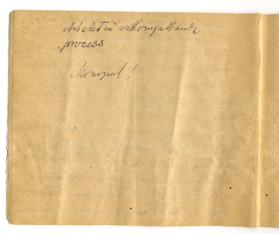[Sida 10]
Arbetet en vittomfattande process
Monopol!
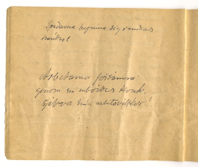[Sida 12]
Spadarna befinner sig i andras händer!
Arbetarna försämrar genom sin inbördes konkurrens själva sina arbetsvillkor!
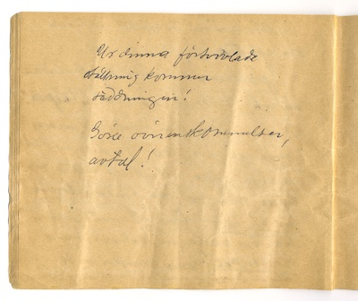[Sida 14]
Ur denna förtvivlade ställning kommer räddningen!
Göra överenskommelser, avtal!
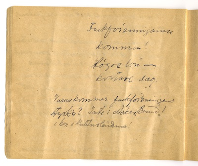[Sida 16]
Fackföreningarna kommer! Högre lön – kortare dag.
Varav kommer fackföreningens styrka? Inte i Askersund! Men i kulturländerna!
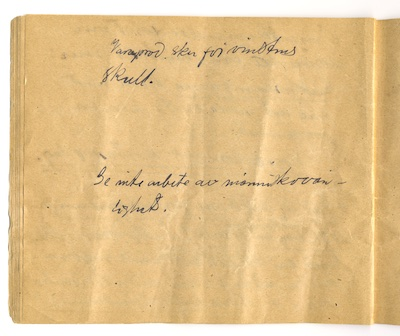[Sida 18]
Varuproduktionen sker för vinstens skull.
Ger inte arbete av människovänlighet.
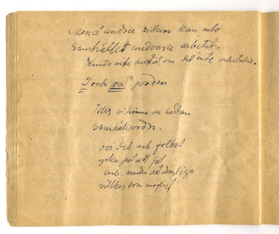[Sida 20]
Men å andra sidan kan inte samhället undvara arbetet. Kunde inte bestå, om det inte arbetades.
I och på jorden
Tills vi vinner en sådan samhällsordning bör det arbetande folket yrka på att få arbeta under så drägliga villkor som möjligt!
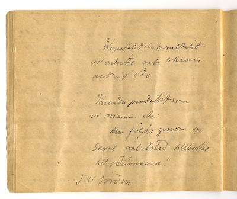[Sida 22]
Kapitalet är resultatet av arbete och skulle aldrig etc
Varenda produkt som vi människor etc. kan följas genom en serie arbetsled tillbaka till råämnena!
Till jorden
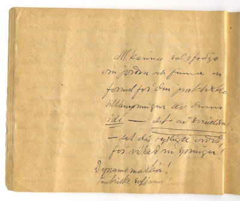[Sida 24]
Att känna så i fråga om jorden och finna en formel för den praktiska tillämpningen av denna idé – det är socialism – det där rysliga ordet, för vilket ni springer!
Dynamomaskin! Turkiske sultanen!
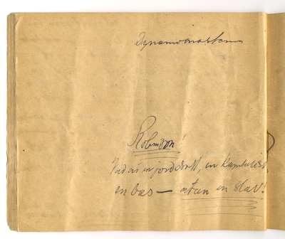[Sida 26]
Dynamomaskinen
Robinson! Vad är en jorddrott, en kapitalist, en bas – utan en slav!
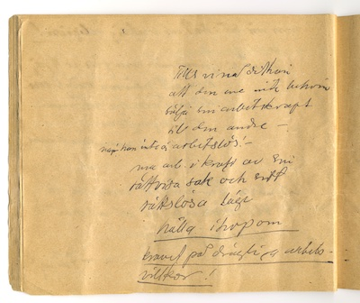[Sida 28]
Tills vi nå dithän att den ene inte behöver sälja sin arbetskraft till den andre – när han inte är arbetslös! – må arbetarna i kraft av sin rättvisa sak och sitt rättslösa läge hålla ihop om kravet på drägliga arbetsvillkor!
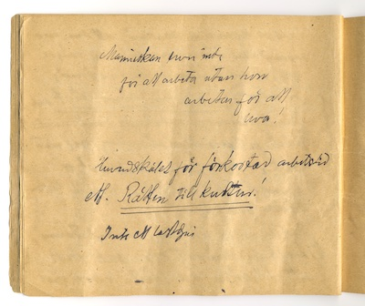[Sida 30]
Människan lever inte för att arbeta, utan hon arbetar för att leva!
Huvudskälet för förkortad arbetstid ett. Rätten till kultur!
Inte ett lastdjur
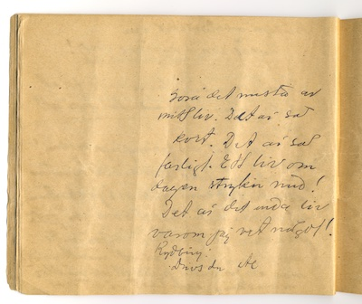[Sida 32]
Göra det mesta av mitt liv. Det är så kort. Det är så farligt. Ett liv om dagen stryker med! Det är det enda liv varom jag vet något! Rydberg: Drivs du etc
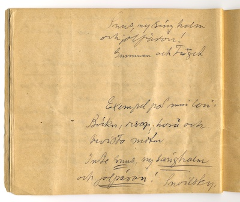[Sida 34]
Snus, ny sänghalm och jolpäron! Gumman och tåget
Exempel på min lön: Böcker, resor, höra och bevista möten Inte snus, ny sänghalm och jolpäron! Snoilsky.
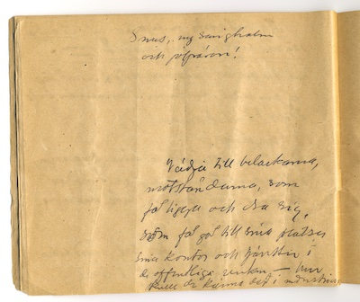[Sida 36]
Snus, ny sänghalm och jolpäron!
Vädja till belackarna, motståndarna, som får ligga och dra sig, som får gå till sina platser, sina kontor och tjänster i de offentliga verken – hur skulle de känna det i industriar
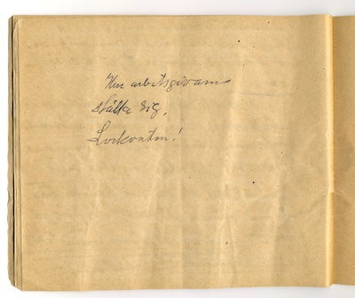[Sida 40]
Hur arbetsgivarna ställa sig.
Lockouten!
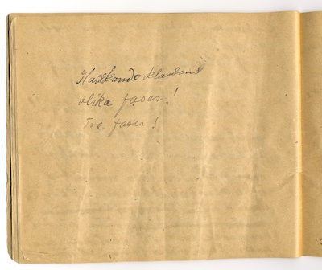[Sida 44]
Härskande klassens olika faser! Tre faser!
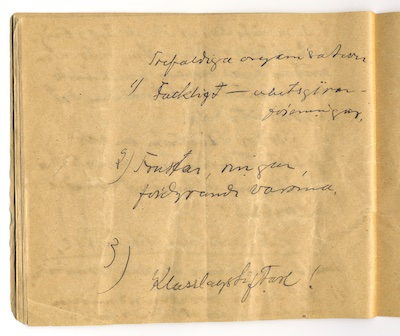[Sida 46]
Trefaldiga organisationer
1) Fackligt – arbetsgivarföreningar.
2) Trustar, ringar fördyrande varorna.
3) Klasslagstiftare!
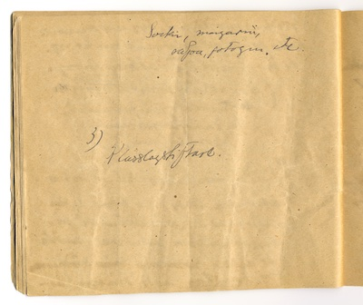[Sida 48]
Socker, margarin, såpa, fotogen etc.
3) Klasslagstiftare.